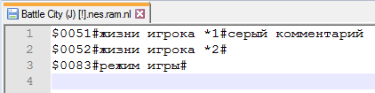

Содержание
Комментарии хранятся в одноименных файлах с расширением .nl, которые обновляются сразу после добавления/редактированя/удаления комментария.
При добавлении/редактировании комментария имя файла отображается в окне Symbolic Debug Naming.
Комментарии на адреса NES Memory в диапазоне $0000-$7FFF записываются в файл .ram.nl. Комментарии на адреса $8000-$FFFF записываются в файл с учетом номера банка, в котором был добавлен комментарий, например в файл .0.nl.

Номер банка указан в Debugger'е слева от адреса команды.
Эти файлы можно пересылать своим знакомым, которые могут помочь тебе с игрой, чтобы у тех также появился список необходимых комментариев. Чтобы Debugger мог увидеть эти файлы, нужно их правильно переименовать под ROM.